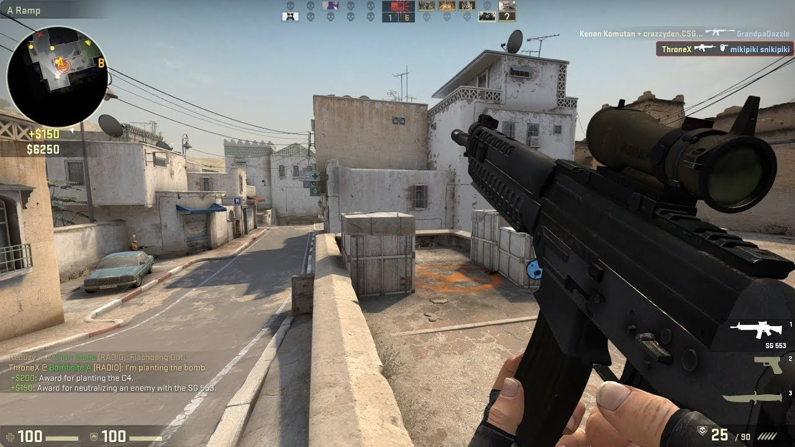
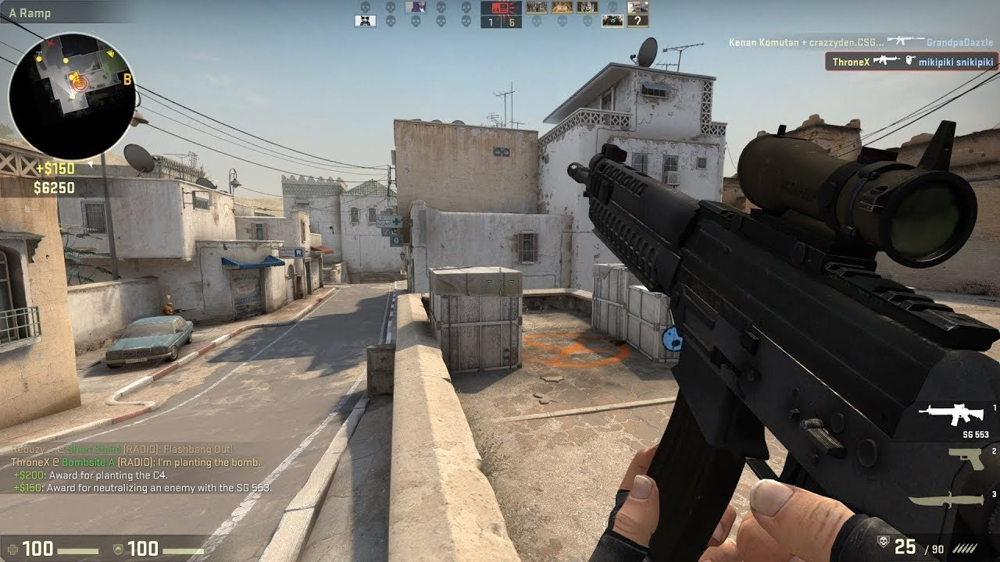
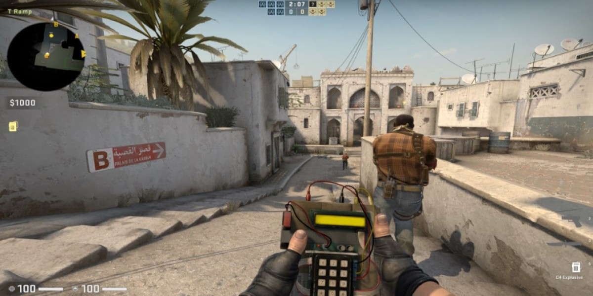
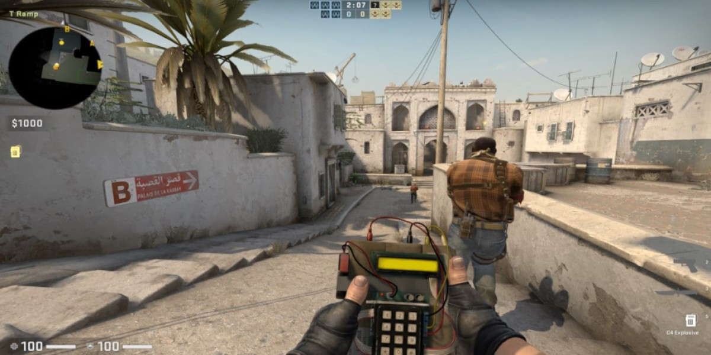

Counter-Strike: Global Offensive
Counter-Strike: Global Offensive ( CS:GO ) არის 2012 წლის მრავალმოთამაშიანი ტაქტიკური პირველი პირის შუტერი , რომელიც შეიქმნა Valve და Hidden Path Entertainment-ის მიერ . ეს არის მეოთხე თამაში Counter-Strike სერიიდან . შემუშავებული ორ წელზე მეტი ხნის განმავლობაში, Global Offensive გამოვიდა OS X- ისთვის , PlayStation 3-ისთვის , Windows-ისთვის და Xbox 360- ისთვის 2012 წლის აგვისტოში, ხოლო Linux- ისთვის 2014 წელს. Valve კვლავ რეგულარულად ანახლებს თამაშს, როგორც პატარა დაბალანსების პატჩებით, ასევე უფრო დიდი კონტენტის დამატებებით. თამაში აწყობს ორ გუნდს, ტერორისტებს და კონტრტერორისტებს, ერთმანეთის წინააღმდეგ სხვადასხვა ობიექტებზე დაფუძნებული თამაშის რეჟიმში. თამაშის ყველაზე გავრცელებული რეჟიმები მოიცავს ტერორისტების მიერ ბომბის დადგმას, ხოლო კონტრტერორისტები ცდილობენ მათ შეჩერებას, ან კონტრტერორისტები ცდილობენ გადაარჩინონ მძევლები, რომლებიც ტერორისტებმა დაატყვევეს. არსებობს ცხრა ოფიციალური თამაშის რეჟიმი, ყველა მათგანს აქვს ამ რეჟიმისთვის დამახასიათებელი მკაფიო მახასიათებლები. თამაშს ასევე აქვს matchmaking მხარდაჭერა, რომელიც საშუალებას აძლევს მოთამაშეებს ითამაშონ გამოყოფილი Valve სერვერებზე, გარდა საზოგადოების მასპინძელი სერვერების მორგებული რუქებით და თამაშის რეჟიმებით. Battle -Royale თამაშის რეჟიმი , "საშიში ზონა", დაინერგა 2018 წლის ბოლოს. Global Offensive-მა მიიღო დადებითი მიმოხილვები კრიტიკოსებისგან გამოშვებისას, რომლებიც აფასებდნენ თამაშს მისი გეიმპლეისა და Counter-Strike სერიების ერთგულებისთვის , თუმცა ის გააკრიტიკეს ზოგიერთი ადრეული მახასიათებლისა და კონსოლისა და კომპიუტერის ვერსიებს შორის განსხვავებების გამო. გამოსვლიდან მოყოლებული, მას თვეში დაახლოებით 11 მილიონი მოთამაშე იზიდავს და რჩება Valve's Steam-ის პლატფორმაზე ერთ-ერთ ყველაზე ნათამაშებად თამაშად. 2018 წლის დეკემბერში, Valve-მ თამაში გადაიტანა უფასო სათამაშო მოდელზე, ფოკუსირებული იყო შემოსავალზე კოსმეტიკური ნივთებიდან. თამაშს აქვს აქტიური esports სცენა , რომელიც აგრძელებს საერთაშორისო კონკურენტული თამაშის ისტორიას სერიის წინა თამაშებიდან. გუნდები ასპარეზობენ პროფესიულ ლიგებსა და ტურნირებში, თამაში ხშირად მოიხსენიება, როგორც საუკეთესოთა შორის ესპორტში.

 

.jpg) 
